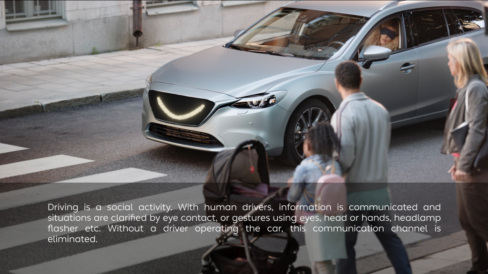
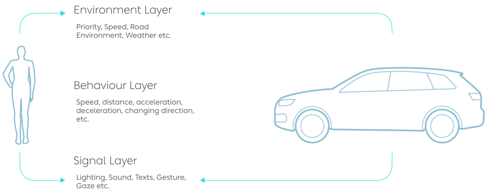
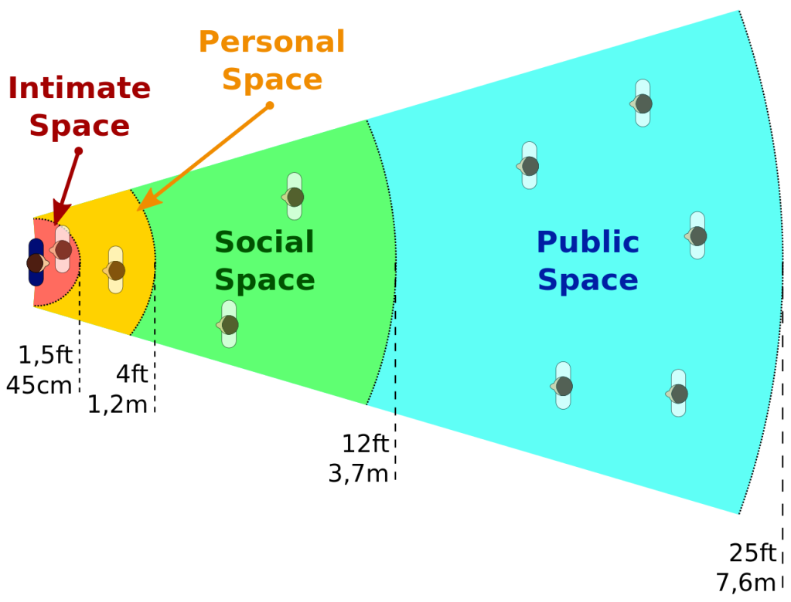
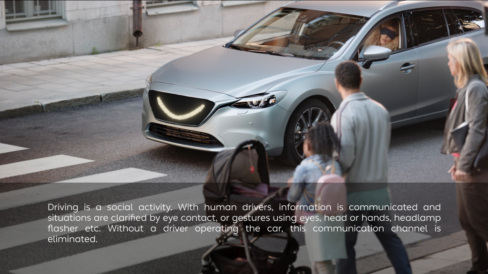
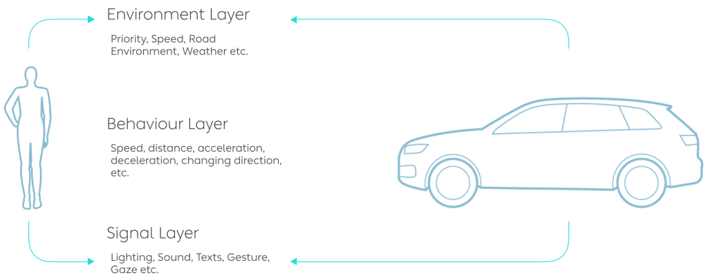
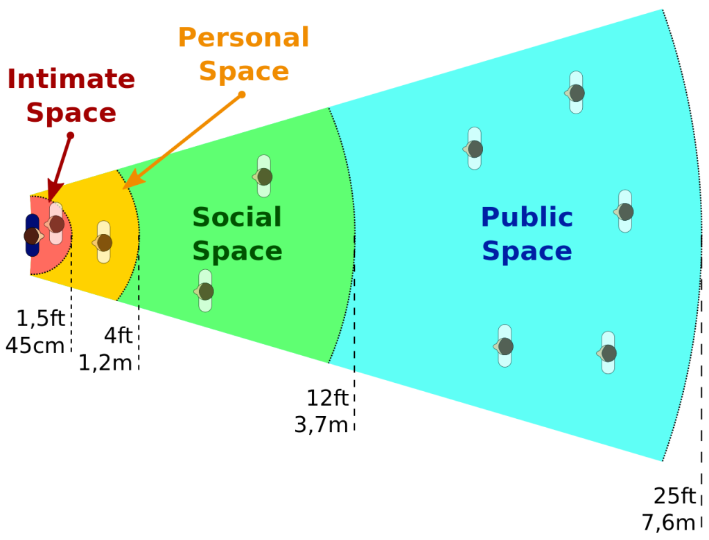

External interface of autonomous driving car
 





Publications:
Dey, D., Martens, M., Wang, C., Ros, F., & Terken, J. (2018, September). Interface concepts for intent communication from autonomous vehicles to vulnerable road users. In Adjunct proceedings of the 10th international conference on automotive user interfaces and interactive vehicular applications (pp. 82-86).